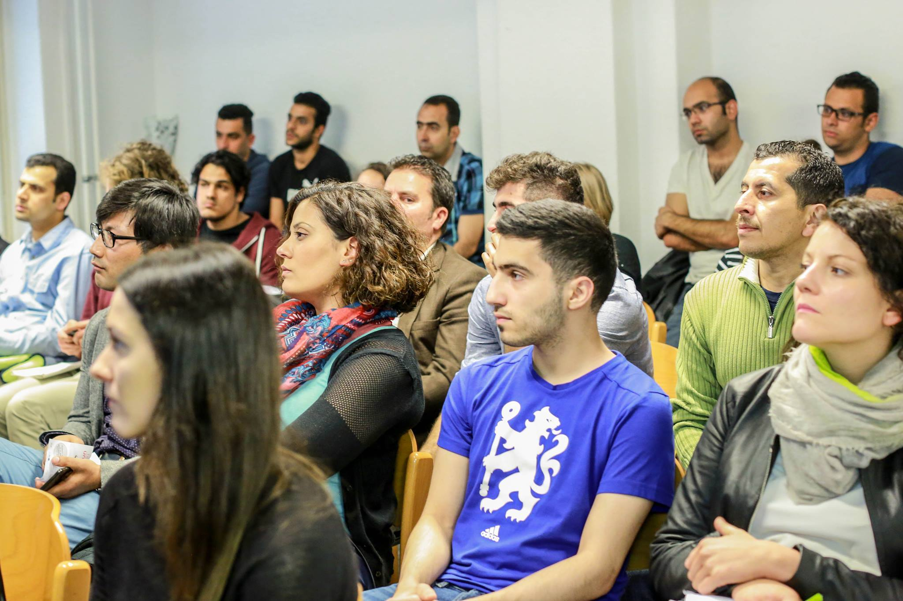

About the project
The project Temporary University – created by a small group of Master students of the Macromedia University in Berlin - is a node of interaction for academics and refugees who wish to pursue further studies in Germany, via a vibrant and diverse online community, where different backgrounds and perspectives meet, resulting in the development of joint projects and publications which reflect the heterogeneity of their authors.